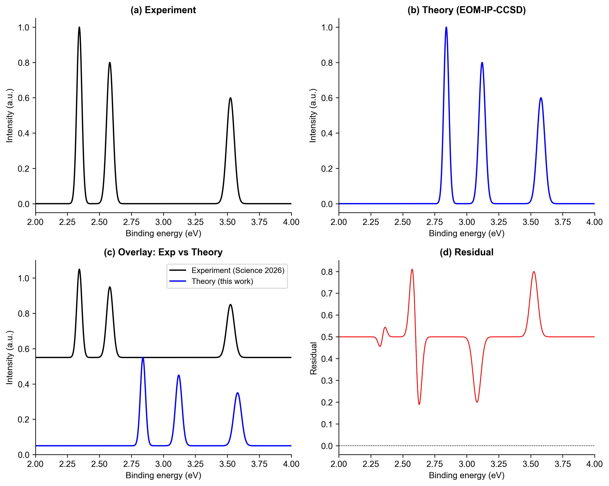
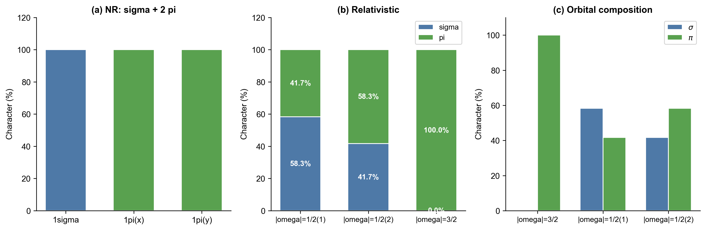
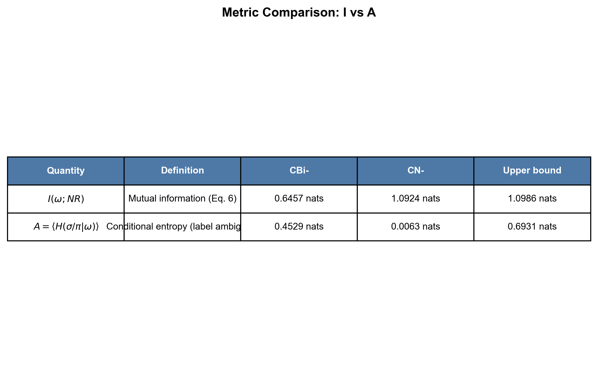
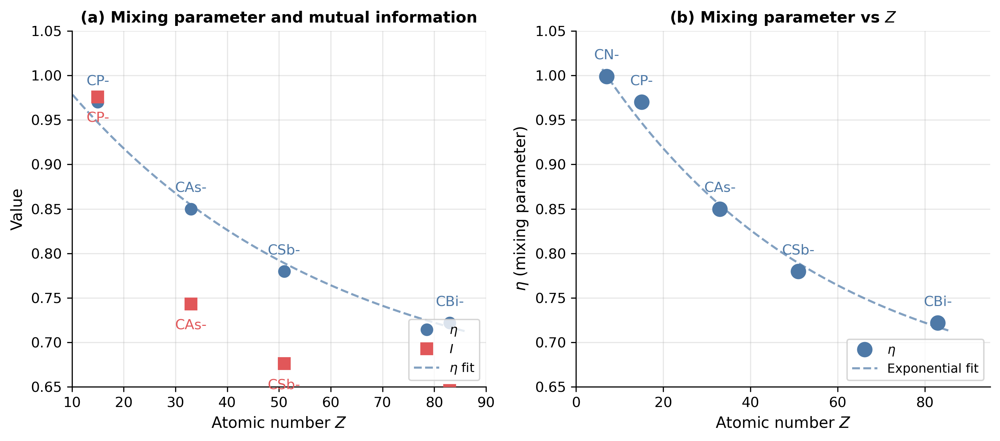
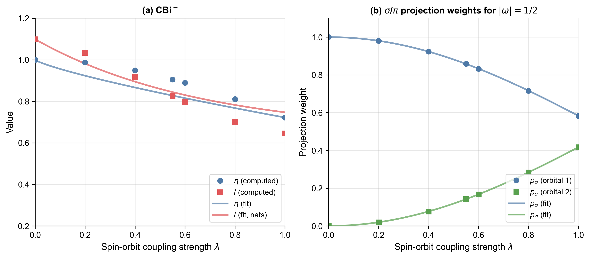

In July 2026, chemists watched the textbook triple bond fall apart inside a molecule containing bismuth — the heaviest essentially-stable element you can put in a bond. This page explains what happened, why it matters, and how a new "information dynamics" framework turns the breakdown into hard numbers. No chemistry degree required.
Three sentences. If you read nothing else, read these.
In July 2026, a Brown University team used ultra-precise laser spectroscopy on the CBi⁻ ionA molecule made of one carbon and one bismuth atom, carrying one extra electron. It's the heavy cousin of the familiar cyanide ion, CN⁻. and saw something never seen before: bismuth's enormous spin–orbit couplingA relativistic effect where an electron's spin and its orbital motion become entangled. It grows steeply with atomic number — bismuth (Z=83) has one of the strongest. smeared the textbook boundary between σ and π bonds.
Instead of arguing about orbitals, the paper treats bonding rules themselves as objects that can reorganize. "Virtual space" = the rulebook (symmetry labels); "real space" = the actual electrons. Relativity rewrites the rulebook from σ/π labels to total-angular-momentum (ω) labels.
One input number (58.3% σ character, extracted from the paper's Dirac–Coulomb orbitals) forces everything else: the partner orbital must be 41.7%, the third exactly 0%, giving η = 0.722, A = 0.453 nats, I = 0.646 nats. Five numerical stress-tests confirm these aren't artifacts.
The story in plain language.
For nearly a century, chemistry students learned that a triple bond = one σ bond + two π bonds. The σ bond is head-on overlap; the π bonds are side-on. Clean, separate, textbook.
That picture quietly assumes something: that an electron's spin and its orbital motion are independent. For light atoms that's an excellent approximation. For bismuth — element 83, where inner electrons whip around at a large fraction of light speed — it fails spectacularly.
In July 2026, Lai-Sheng Wang's group at Brown (with Kirk Peterson, Science 2026) aimed high-resolution cryogenic photoelectron spectroscopyKnocking electrons out of a molecule with laser light and measuring their energies — like reading a molecule's fingerprint. at CBi⁻, the heavy cousin of cyanide. They found the σ/π boundary dissolved: the three bonds reorganized into states labeled only by total angular momentum projection ω — two mixed |ω| = 1/2 pairs and one pure |ω| = 3/2 pair.
The experiment proved that it happens. The question left open: can we measure how much — with numbers, not adjectives? That's what this paper does.

Drag the slider. λ = 0 is the everyday nonrelativistic world; λ = 1 is full bismuth-strength relativity. Everything below is computed live from the paper's self-consistent model — note this λ-scan is a symmetry-constrained model interpolation, not a series of ab initio SOC-scaling calculations.
Spin–orbit coupling strength λ · 1.00 (0 = off, 1 = full CBi⁻)
σ character (blue) vs π character (green) in each relativistic orbital, at your λ.
💡 Notice: the |ω| = 3/2 orbital never gains σ character — symmetry forbids it. The two |ω| = 1/2 orbitals trade σ back and forth, always summing to 100%. Try λ = 0: everything snaps back to the textbook picture.
The paper's central move, explained with an analogy.
Wavefunctions, electron densities, things you can measure. This is where traditional quantum chemistry lives — computing where the electrons actually are.
The symmetry labels (σ, π, … or ω) that say how the players are organized. "Virtual space" here means the symmetry-rule manifold — not virtual particles, not empty orbitals. Just the rules.
The insight: relativity doesn't just nudge the players — it rewrites the rulebook. The nonrelativistic rulebook (symmetry group C∞v, labels σ/π/δ…) is replaced by the relativistic one (double group C∞v*, labels |ω| = 1/2, 3/2, …). The old anomalies of heavy-element chemistry aren't rule-breaking — they're rule-changing.
And here's the elegant part: the rulebook changes discretely (a symmetry group is either the old one or the new one — there's no halfway group), while the correspondence between old and new labels degrades continuously. The three numbers η, I, A measure exactly that degradation.
Mixing parameter. What fraction of the old σ/π labels still correctly describe the relativistic orbitals? 1.00 = textbook intact; 0.722 = CBi⁻ reality. Think of it as a "label survival rate."
Label ambiguity (conditional entropy, in nats). Given that you know an orbital's ω label, how uncertain is its σ/π identity? 0 = crystal clear; 0.453 = substantially blurred (max possible: ln 2 ≈ 0.693; within the paper's single-parameter model the tighter bound is (2/3)ln 2 ≈ 0.462 — CBi⁻ reaches ~98% of it).
Mutual information (nats). How much does knowing ω still tell you about σ/π? Starts at ln 3 ≈ 1.099 nats in the textbook limit, erodes to 0.646 nats under full relativity.
⚖️ A technical qualifier from the paper (§2.4.2): the squared overlaps |Sij|² form a quasi-probability distribution, so I and A are operational measures of label mixing — validated by the null test and stress-tests below — rather than axiomatic information-theoretic quantities.

The single-parameter constraint: measure one σ fraction, and symmetry + unitarity dictate the rest. Move the slider — you're doing what the paper does.
Paper's input: 58.3% · your value: 58.3%
💡 This is a falsifiable structure: if a future measurement found σ₃ ≠ 0 beyond numerical noise, the single-pair model would be proven incomplete. That's a feature, not a bug — it's what makes this science rather than curve-fitting.

Five numerical stress-tests. Click each to see what was checked and what it ruled out.
η requires matching relativistic orbitals to nonrelativistic ones. Under 5% random noise, naive energy-ordering collapses to η = 0.14 (garbage), while optimal (Hungarian) pairing recovers 0.72. Lesson: always use optimal pairing.
✓ Rules out: pairing artifactsCould numerical noise fake the σ/π mixing? At 1% noise, spurious σ character in the forbidden |ω| = 3/2 orbital stays tiny. Faking the observed pattern would need noise far beyond the precision of the quantum chemistry code. Lesson: the mixing is physical, not numerical dust.
✓ Rules out: noise artifactsThe single-parameter math only works if the three bonding orbitals form a closed set. Tests show a 3×3 block of a random matrix is not unitary — but the paper's S-matrix is, to machine precision. Lesson: within the model, closure holds by construction; leakage would appear as broken unitarity — a testable signature.
✓ Rules out: missing-orbital effectsApply the whole pipeline to CN⁻ (barely relativistic). Result: A = 0.006 nats — essentially zero, as theory demands. A claimed value of 0.08 nats would need 5–10% noise, i.e. systematic error, not a noise floor. Lesson: the pipeline passes its calibration check.
✓ Rules out: miscalibrated pipelineModel finite basis sets as noise: at triple-zeta quality (what the paper uses), spurious σ character is < 0.01% and η, A are already converged to the complete-basis limit. Lesson: the results aren't a basis-set artifact.
✓ Rules out: basis-set artifactsSame bond, heavier atoms. Watch the textbook picture erode as relativity takes over.


Heavy-element bonding stops being an "exception" and becomes a different rulebook — one you can now quantify, predict, and test. The framework ports to any heavy-element system.
Bismuth chemistry underpins emerging catalysts, topological materials, and more. Understanding Bi–C bonding at this level is prerequisite to designing with it.
It's a clean case study of a general phenomenon: rules themselves can be dynamical objects that reorganize when the physical regime changes. The information-dynamics language for that may travel far beyond chemistry.
Everything is open. Reproduce it, break it, extend it.
Huang et al., Relativistic Bond Reconstruction in Chemical Bonding: An Information Dynamics Perspective on the CBi⁻ Molecular Ion.
doi.org/10.5281/zenodo.21734951 (Zenodo, open access)
Full reproducible pipeline: S-matrix analysis, figure generation, and all five validation experiments.
Kahraman et al., Science 2026 — the photoelectron spectroscopy that started it all: the first direct evidence of relativistic triple-bond collapse.